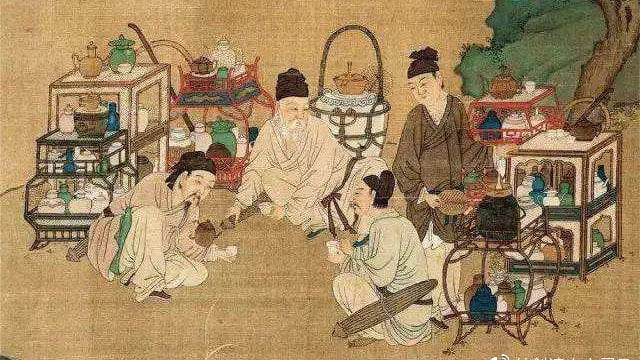
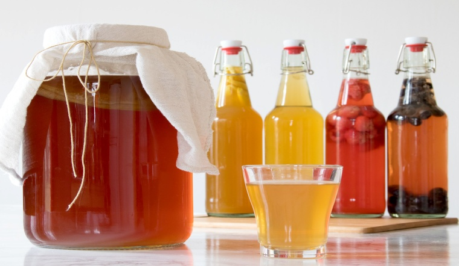

Nguồn gốc bí ẩn
Kombucha, thức uống lên men từ trà với vị chua ngọt thanh mát, đang ngày càng phổ
biến bởi những lợi ích sức khỏe tiềm năng. Tuy nhiên, ít ai biết rằng, lịch sử của loại trà
này đã trải dài hàng nghìn năm,ẩn chứa nhiều câu chuyện bí ẩn và truyền thuyết hấp dẫn.
Khó có thể xác định chính xác nguồn gốc của Kombucha, nhưng nhiều
bằng chứng cho thấy nó xuất hiện từ 2000 năm trước ở các nước Đông Á.
Một số ghi chép cổ xưa từ Trung Quốc đề cập đến "trà bất tử"
được cho là Kombucha, với khả năng chữa bệnh thần kỳ.
Truyền thuyết Nhật Bản kể về Tiến sĩ Kombu, người đã mang Kombucha đến
Nhật Bản để chữa bệnh cho Hoàng đế Inkyo, từ đó thức uống này mang tên ông.
Kombucha cũng được biết đến ở Nga từ thế kỷ 19 với tên gọi kvass và lan
rộng sang châu Âu sau đó.

Lịch sử phát triển
Kombucha trải qua nhiều thăng trầm trong lịch sử, từng bị lãng quên một
thời gian trước khi được "tái sinh" vào thế kỷ 20.
Nửa đầu thế kỷ 20: Kombucha phổ biến ở châu Âu và Mỹ như một liệu pháp y học dân gian.
Thập niên 1960: Nhu cầu đối với Kombucha tăng cao, dẫn đến sự ra đời của các công ty sản xuất thương mại.
Thập niên 1980: Kombucha đối mặt với một số lo ngại về an toàn, khiến thị trường thu hẹp.
Gần đây: Kombucha "tái xuất" mạnh mẽ nhờ sự quan tâm ngày càng tăng đến thực phẩm lên men và lối sống lành mạnh.

Kombucha ngày nay
Kombucha trở thành thức uống ưa chuộng trên toàn thế giới với nhiều hương vị và thương hiệu đa dạng.
Ngành công nghiệp Kombucha phát triển mạnh mẽ, mang đến nhiều cơ hội kinh doanh và việc làm
Các nghiên cứu khoa học về lợi ích sức khỏe của
Kombucha đang được tiến hành, tiềm năng ứng dụng trong y học và dinh dưỡng được đánh giá cao.
Kết luận:
Lịch sử Kombucha là hành trình dài và thú vị, phản ánh sự hòa quyện giữa văn hóa, y học và khoa học.Từ "nấm trường sinh" huyền thoại đến thức uống
hiện đại, Kombucha tiếp tục khẳng định vị thế độc đáo và tiềm năng to lớn trong việc nâng cao sức khỏe con người.